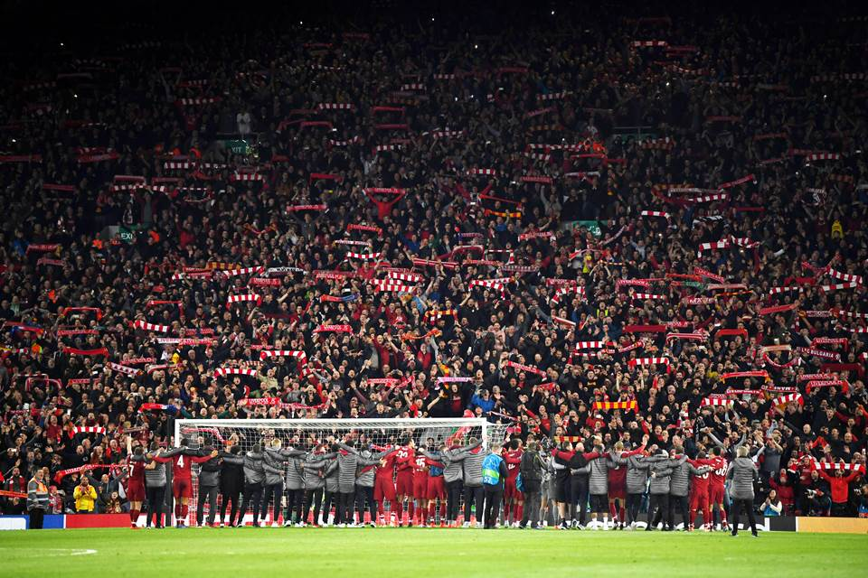

Liverpool The Reds
O Liverpool Football Club, ou da forma reduzida L.F.C., é um clube de futebol, com sede na cidade de Liverpool, Noroeste da Inglaterra. Fundado em 1892, ingressou na Football League no ano seguinte e desde então atua no Anfield Road.

Só nos anos 1970, a equipe conquistou cinco títulos europeus, sendo bicampeão da Champions League em 77 e 78. Além disso, o Liverpool ainda conquistou duas vezes a Europa League, em 1973 e 1976, e a Supercopa da Europa em 1977, quando empatou por 1 a 1 na Alemanha com o Hamburgo e aplicou 6 a 0 na volta, em Anfield.